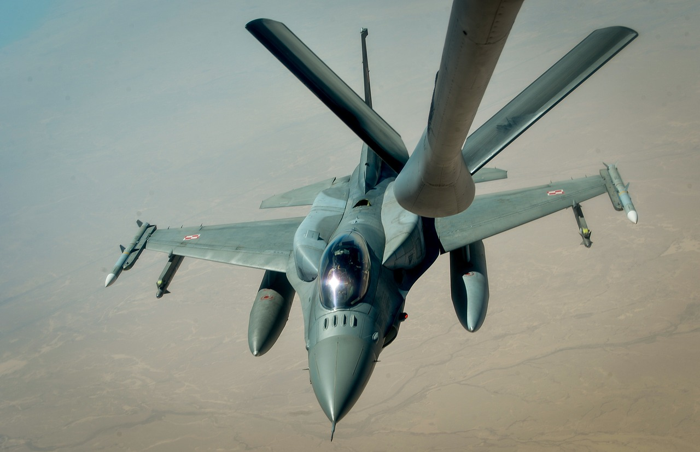

After the fall of communism, Poland inherited a fleet of Soviet-made combat aircraft, such as the MiG-21, MiG-23 and Su-22. Although these were valued aircraft during the Warsaw Pact era, by the second half of the 1990s their combat capabilities were already outdated compared to modern NATO standards. After Poland joined the North Atlantic Alliance in 1999, it became clear that the Polish Air Force needed a new multi-role aircraft that would not only meet allied requirements, but would also take Polish aviation to a completely new technological and operational level.
In 2001, a formal tender procedure for the purchase of modern fighters was launched. There were three designs in the game: the American F-16, the Swedish Gripen and the French Mirage 2000. The entire process was not only a military decision, but above all a political one. The selection of a new aircraft was of great importance for shaping Poland's international relations and meant taking the side of a specific strategic partner. In December 2002, Leszek Miller's government announced the selection of the F-16C/D Block 52+ as the new aircraft for the Polish Air Force. It was one of the largest arms deals in the history of the Third Polish Republic, amounting to over 3.5 billion dollars, and an additional advantage was the offer of an offset, i.e. investment in the Polish economy in exchange for choosing the American offer.
The agreement provided for the delivery of 48 aircraft, of which 36 were to be single-seat F-16Cs and 12 two-seat F-16Ds. The version selected by Poland was one of the most modern export configurations of this aircraft available at the time, equipped with advanced radars, electronic warfare systems, modern communications and the ability to carry long-range precision weapons. At the same time, the process of training pilots and technicians began in the United States – the first such extensive military cooperation between Poland and the US in decades.
The first aircraft arrived in Poland in November 2006 and were accepted at the 31st Tactical Air Base in Krzesiny near Poznań. Over time, some of the aircraft were also transferred to the base in Łask. The aircraft very quickly began to take part in domestic and international military exercises, and their presence allowed Poland to actively participate in NATO operations, such as Baltic Air Policing missions or joint maneuvers with allied armies. The F-16s, which in Poland gained the name "Jastrząb", replaced not only the aging MiGs and Sus, but also initiated a completely new era in Polish military aviation - a digital, multi-role era, integrated with Western operational and command standards.
The purchase of the F-16 also had a deep political and geostrategic dimension. Poland has clearly anchored itself in the structures of the West, and the decision to choose the American aircraft meant not only armament modernization, but also tightening relations with a key ally in the area of security. Today, a dozen or so years after the first deliveries, the F-16s are the basis of the combat power of the Polish Air Force, and their importance is not decreasing - on the contrary, in the face of threats from Russia and the conflict in Ukraine, they are one of the most important tools of deterrence and defense of the state.